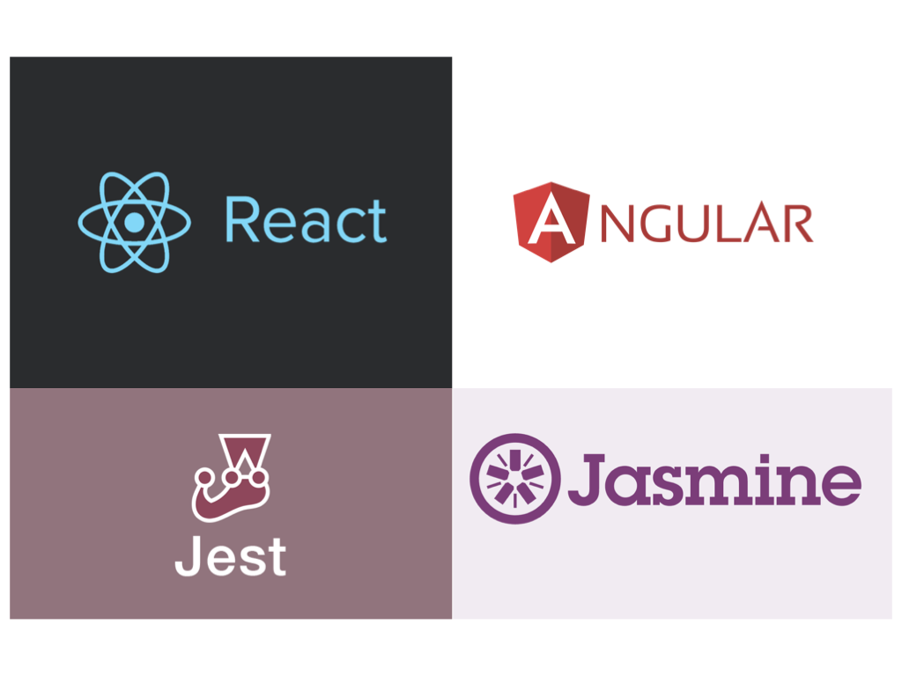

<section class="theme-invert">
  <h2 hidden aria-hidden="false">框架和单元测试</h2>
  <audio src="audio.mp3"></audio>
  <figure>
    

    <figcaption>
      <p>大多数现代Web框架都附带了自己的单元测试库。如果您是React的拥趸，那么您可能非常熟悉Jest。Angular开发人员使用自带的库Jasmine进行单元测试。</p>
    </figcaption>
  </figure>
</section>
